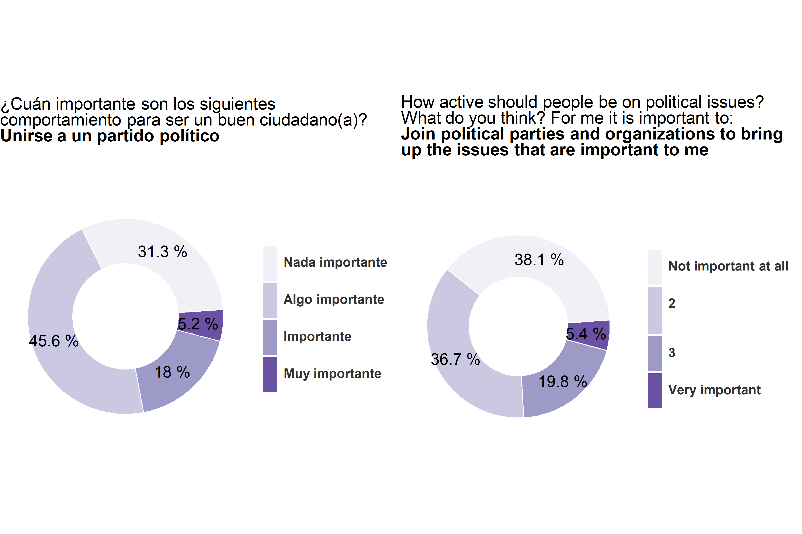

4.2 Norms of good citizenship
4.2.0.1 Join political parties and organizations to bring up the issues that are important to me

El que los jóvenes suecos estén más satisfechos con su democracia que los jóvenes chilenos es relativamente consistente con la calidad actual de las democracias en ambos países. Aunque según el índice de la democracia actualmente tanto en Chile como en Suecia existe una administración imparcial, controles gubernamentales y un gobierno representativo, existen diferencias sustanciales en otros aspectos. Contrario al caso Sueco, en Chile no existe una garantía real de los derechos fundamentales, ni tampoco existe un adecuado compromiso con la participación. En el caso Chileno es especialmente deficitario el acceso a la justicia y a los derechos sociales. Es razonable considerar que la ausencia de condiciones adecuadas para el desarrollo de una adecuada vida ciudadana merma la satisfacción con la democracia en el caso chileno, lo cual es consistente con la evidencia que destaca la falta de valoración de la democracia ante la falta de derechos sociales adecuados ().